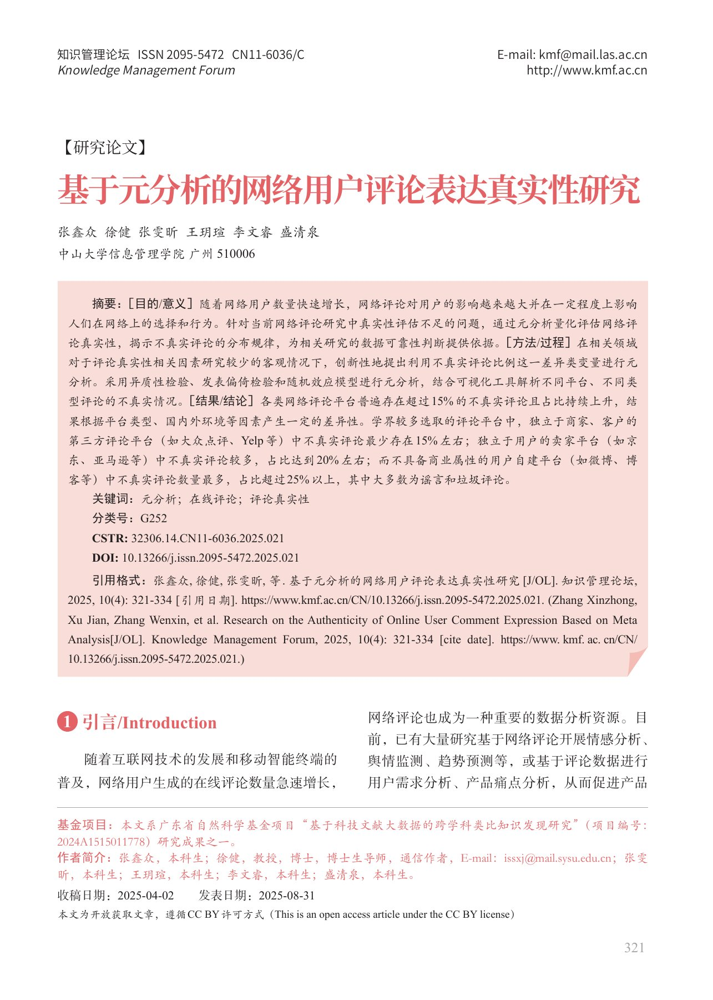

资料筛选
研究从既有实证文献提取可用信息，最终纳入 223 篇中英文文献。
02 / ANALYSIS / 论文
国家级大学生创新创业训练计划 · 核心成员 · 2022.12–2023.12
MY ROLE
我参与收集与整理研究数据，并参与论文撰写；论文作者贡献声明记录了这些工作。
OVERVIEW
围绕网络评论能否可靠支撑研究与决策，团队从既有实证文献中提取评论类型、平台、样本量和不真实评论比例，最终纳入 223 篇中英文文献进行元分析。研究比较不同平台与评论类型的差异，提示评论数据存在来源与定义偏差，为用户洞察和内容分析提供数据质量意识。
CAPABILITY IN PRACTICE
研究从既有实证文献提取可用信息，最终纳入 223 篇中英文文献。
编码涵盖平台、评论类型、样本量与不真实评论比例，并采用双人编码和分歧协商。
团队通过异质性、发表偏倚检验和综合分析比较研究结果，说明评论数据的来源与定义限制。
READ THE COMPLETE WORK
下方展示完整作品，可连续翻页或跳到任意一页。

点击页面可放大查看。阅读器聚焦后可用左右方向键翻页。